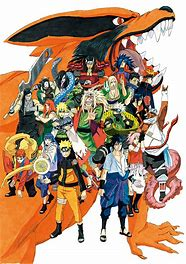
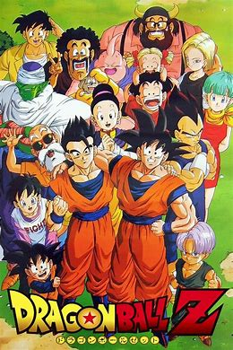
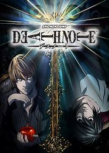
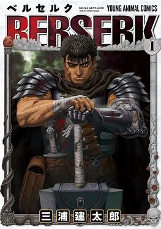

- ONE PIECE
- NARUTO 
- Dragon Ball 
- Death Note 
- BERSERK 
One Piece est une série de shōnen mangas créée par Eiichirō Oda. Elle est prépubliée depuis le 22 juillet 1997 dans le magazine hebdomadaire Weekly Shōnen Jump, puis regroupée en tankōbon aux éditions Shūeisha depuis le 24 décembre 1997. 108 tomes sont commercialisés au Japon en mars 2024. La version française est publiée en volumes reliés depuis le 1er septembre 2000 par Glénat, et 107 volumes sont commercialisés en avril 2024. Depuis le 26 septembre 2021, la version française est prépubliée simultanément avec la version japonaise sur les plates-formes en ligne Manga Plus et Glénat Manga Max.
est une série de shōnen mangas créée par Eiichirō Oda. Elle est prépubliée depuis le 22 juillet 1997 dans le magazine hebdomadaire Weekly Shōnen Jump, puis regroupée en tankōbon aux éditions Shūeisha depuis le 24 décembre 1997. 108 tomes sont commercialisés au Japon en mars 2024. La version française est publiée en volumes reliés depuis le 1er septembre 2000 par Glénat, et 107 volumes sont commercialisés en avril 2024. Depuis le 26 septembre 2021, la version française est prépubliée simultanément avec la version japonaise sur les plates-formes en ligne Manga Plus et Glénat Manga Max.
Dragon Ball is a Japanese media franchise created by Akira Toriyama in 1984. The initial manga, written and illustrated by Toriyama, was serialized in Weekly Shōnen Jump from 1984 to 1995, with the 519 individual chapters collected in 42 tankōbon volumes by its publisher Shueisha. Dragon Ball was originally inspired by the classical 16th-century Chinese novel Journey to the West, combined with elements of Hong Kong martial arts films. Dragon Ball characters also use a variety of East Asian martial arts styles, including karatend Wing Chun (kung fu).The series follows the adventures of protagonist Son Goku from his childhood through adulthood as he trains in martial arts. He spends his childhood far from civilization until he meets a teen girl named Bulma who encourages him to join her quest in exploring the world in search of the seven orbs known as the Dragon Balls, which summon a wish-granting dragon when gathered. Along his journey, Goku makes several other friends, becomes a family man, discovers his alien heritage, and battles a wide variety of villains, many of whom also seek the Dragon Balls.
Death Note is a Japanese manga series written by Tsugumi Ohba and illustrated by Takeshi Obata. It was serialized in Shueisha's shōnen manga magazine Weekly Shōnen Jump from December 2003 to May 2006, with its chapters collected in 12 tankōbon volumes. The story follows Light Yagami, a genius high school student who discovers a mysterious notebook: the "Death Note", which belonged to the shinigami Ryuk, and grants the user the supernatural ability to kill anyone whose name is written in its pages. The series centers around Light's subsequent attempts to use the Death Note to carry out a worldwide massacre of individuals whom he deems immoral and to create a crime-free society, using the alias of a god-like vigilante named "Kira", and the subsequent efforts of an elite Japanese police task force, led by enigmatic detective L, to apprehend him.
Berserk is a Japanese manga series written and illustrated by Kentaro Miura. Set in a medieval Europe-inspired dark fantasy world, the story centers on the characters of Guts, a lone swordsman, and Griffith, the leader of a mercenary band called the "Band of the Hawk". The series follows Guts' journey seeking revenge on Griffith, who betrayed him and sacrificed his comrades to become a powerful demonic being.